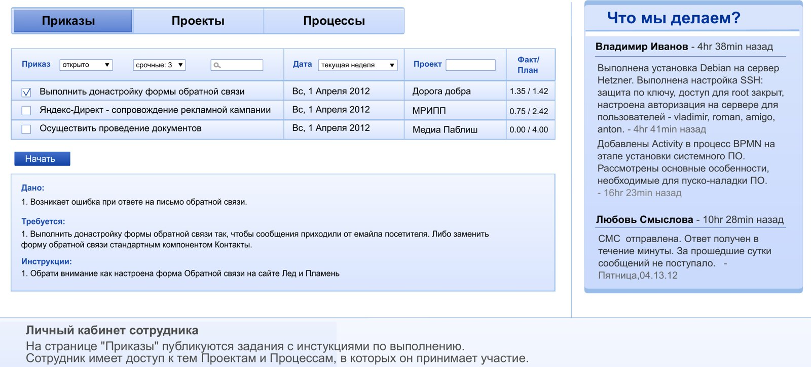
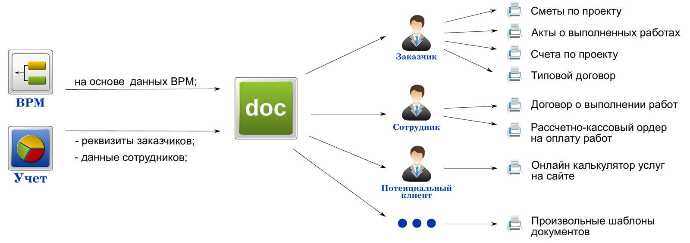
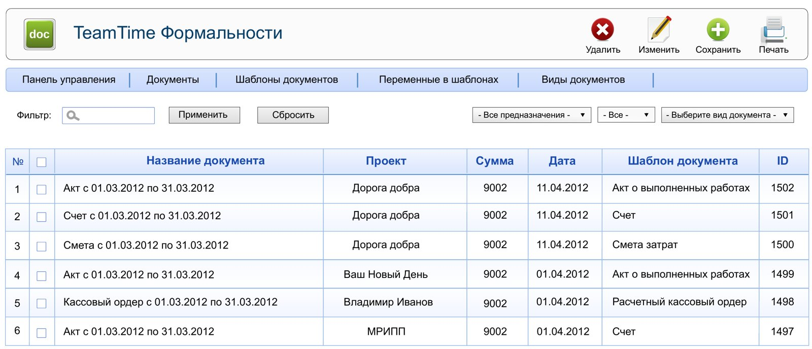

TeamTime BPM
Work is measured in time, not money. Processes, tasks and reports in one system — so the manager sees the team's real work and every employee sees their own contribution and growth.
max(R) = max(D)
Maximum respect with maximum demands —
A.S. Makarenko's model, built into a tool
Why TeamTime was created
TeamTime was not invented “for the market”. It grew out of a small-team leader's need: to see what has actually been done, to assess everyone's work fairly — and not to drown in control.
The problem it solved
- Work is invisible. A task tracker shows that a task is closed, but not how much work went into it or how the work actually went.
- Money is a poor measure. Rates differ and prices change, and the question “what is this work worth” quickly turns into haggling instead of a conversation about results.
- Control eats the manager. Without a system, the director has to ask everyone in person — losing time and undermining trust.
- Accounting systems are too heavy for small business. Issuing an act of completion and calculating pay should not require a separate accounting suite.
Web studio “Media Publish”
The team works on the principle of “respect + demands”. A need arises to record everyone's work: tasks, reports, hours.
First version of TeamTime
Tracking, Calendar, BPM process editor, Career, Formalities and a client portal. The system becomes the studio's main tool.
Sole proprietor A.N. Gavrilyuk
TeamTime BPM continues to work as a project management tool — to this day.
Distributed R&D team
A working prototype of TeamTime BPM manages the work of the remote embedded-software team of Rostov Electronics Plant LLC.
New edition
The concept takes shape as a tool of the Makarenko model; robots and AI agents join processes as performers.
Time, not money — the equivalent of useful work
In TeamTime the measure of work is an hour of confirmed useful work. Money is a derived value: it is calculated from hours, not the other way round.
Equally clear to everyone
The director, the engineer and the client all understand an hour of work. Hours can be agreed in advance, compared with the plan and discussed without haggling.
Does not depreciate
Prices and exchange rates change, but an hour of work stays an hour. An employee's accumulated experience is expressed in hours and keeps its meaning for years.
Only useful work counts
An hour counts when it is backed by a report and an accepted result. “Just being present” in the system does not turn into pay.
Comparable across professions
A programmer, a designer and an administrator work in the same measure. Differences in qualification are reflected in the hourly rate, not in different accounting logic.
Grows with the person
Confirmed hours in a specialty are real experience. Gain experience — move up to the next level with a higher hourly rate.
Honest economics
The cost of a project or process is calculated from real hours (Activity Based Costing), not from rough guesses.
How TeamTime works
Five principles the system rests on. The screenshots come from the first, Russian-language version of the interface; the logic behind them has not changed.
Time tracking and reports
An employee opens a task and clicks “Start” — the time counter runs. When finished, they write a short report: what was done, what the result is, how long it took.
- The report is the main document of the day: brief, to the point, with time.
- The “What are we doing?” feed shows the team's reports in real time.
- Planned / actual hours are visible for every task, project and employee.
- The manager manages by reports, not by questioning people.

Processes, projects, tasks — the basic units of planning and accounting
Recurring work is described as a process once and then launched from a template catalog. Every task is written as a specification: what is given, what is required, how to do it. There are no vague assignments in the system.


The right information, at the right time, to the right person
The process passes work along the chain by itself: when one participant submits a report, the next one receives their task — with instructions and input data.
- An employee sees only their own tasks and the processes they take part in, and receives a weekly work plan.
- A manager receives reports and summaries by project, type of work and person.
- A client sees progress, reports and planned / actual hours in their own portal (C-Report).

Process transparency
A process in TeamTime is a living diagram, not a regulation filed away in a folder. The diagram shows who performs each step, where the work is now, and how many hours were planned and spent.
- Simplified BPMN notation — 10 standard elements, clear without training.
- Cost analysis of a process based on actual hours.
- You can see at once at which step difficulties or errors occurred.
- An archive of completed processes — a history of how the work was actually done.

Tasks for robots and AI are part of processes
The TeamTime task format — “Given · Required · Instructions” — is essentially a ready-made task statement for an AI agent. So a robot becomes one more participant in the process: it has its own lane on the diagram, its own tasks and its own reports.
- Routine steps (data collection, draft documents, checks) are done by an agent.
- The agent submits a report in the same format as a person — the work stays transparent.
- Decisions and quality control remain with people.
- You can see how much employee time automation has freed up.
Software modules
The modules share one base of employees, projects and tasks. They can be introduced gradually: start with Tracking and add the rest as needed.
TeamTime Tracking
The core of the system: employees, projects, types of work, tasks and reports, summary reports.
Employee portal
- Task time counter.
- Task text in the form of a specification.
- Report entry; filtering tasks by status, urgency, project.
Manager portal
- Time and financial costs by project, type of work and employee.
- Employee reports and summary reports for a period.
Client portal (C-Report)
- Work log, reports and planned / actual hours per project.
- Interim results, materials and instructions.

TeamTime Calendar
The team's task calendar: who does what, and when.
- Month / week / day views, drag-and-drop tasks.
- Filters by employee, project, type of work, process.
- Subtasks and planned / actual hours control that includes them.
- Recurring tasks: daily, weekly, monthly, yearly.
- Weekly work plan emailed to every employee.

TeamTime BPM
A business process editor in which the diagram is both the set of tasks and the logistics of their execution.
- Simplified BPMN notation of 10 standard elements.
- Every action on the diagram is a task with a performer, planned hours and instructions.
- Running a process: tasks automatically pass from one performer to the next.
- Cost analysis (ABC), template catalog, archive, areas of activity.
- A step can be performed by a person, a robot or an AI agent.
TeamTime Career
Tracking real experience by specialty and a growth program for every employee.
- Goal vector. When hiring, the manager and the employee together set professional goals aligned with the company's goals.
- Real experience. Confirmed hours from tasks automatically accumulate by skill and specialty.
- Levels and hourly rate. Transparent pay grades — from intern to manager; level growth based on confirmed hours.
- Retraining. An individual learning path: the curriculum as a BPMN process, study tasks with reports, and a skills assessment sheet at the end.


TeamTime Formalities
Generating documents from templates — using the data already in the system: processes, reports, client details and employee data.
- For clients: estimates, acts of completed work, invoices, standard contracts.
- For employees: contracts, cash disbursement orders, pay calculation.
- For prospective clients: an online service calculator on the website, built from a process.
- Custom templates with variables.


TeamTime — a tool for the Makarenko model of managing a collective
A.S. Makarenko's model rests on how the collective is organised, not on the manager's personal qualities. TeamTime turns this organisation into everyday practice: every principle of the model has a concrete mechanism in the system.
max(R) = max(D)
High demands on a person express respect for them, while respect without demands means indifference. In TeamTime, demand and respect are one action: a clearly set task with honestly counted work.
| Principle of the model | How TeamTime implements it |
|---|---|
| Maximum demands | Every task is “Given · Required · Instructions” with planned hours. The result passes quality control; only confirmed work is counted. |
| Maximum respect | No micromanagement: the manager sees the work through reports. Pay is predictable and calculated from hours; everyone's contribution is visible to the team. |
| The commander's reportin the commune — daily | An employee's daily report: brief, substantiated, with time. The “What are we doing?” feed instead of questioning. |
| The collective as a tool | Processes connect people: one person's result is another's input. A shared work log makes the team visible to itself. |
| Lines of perspective | The goal vector in the Career module: the near perspective is the next level, the far one is a new specialty. |
| Parallel action | The manager manages the way of working — processes and templates — not each person individually. |
| Productive work and learning | Study tasks are ordinary process tasks with reports and hours; an individual learning path runs in the same system. |
| Traditions | The process template catalog keeps “how we do things here” and passes it on to new employees. |
More about the model
The history of the colony and the commune, the rules of collective work, experience of applying the model since 2008Deployment options
The functionality is the same in both options. The difference is where the data is stored and who maintains the server.
SaaS
TeamTime in cloud hosting
- You can start working right away — no server and no administrator needed.
- Updates, backups and support are handled by the developer.
- Browser access for employees, managers and clients from anywhere.
- Convenient for distributed and remote teams.
Suits: small companies, studios, project and remote teams.
Personal server
Inside the company's internal network
- Data about work, people and processes never leaves the company perimeter.
- Installed on the client's server; works in a closed network.
- Integration with internal systems and your own AI agents.
- Process and document templates tailored to company regulations.
Suits: manufacturing companies, R&D departments, organisations with information security requirements.
Discuss deployment
I will show the working prototype, share my experience of managing a remote team, and help you choose a deployment option.